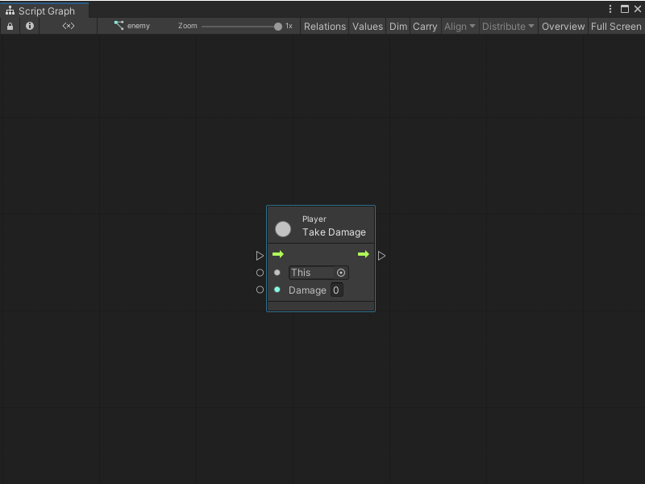
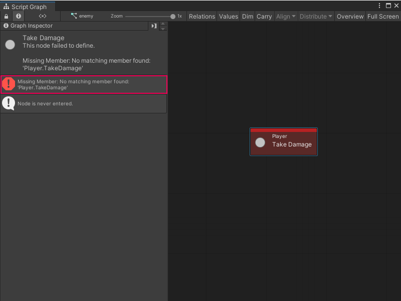

Refactor a C# script with Visual Scripting¶
Visual Scripting creates nodes from methods, fields, and properties from C# script in your project. Visual Scripting creates these nodes after you regenerate your Node Library and add any relevant types to your Type Options.
For example, Visual Scripting created the following Take Damage node from a custom C# script that defines the Player class.

Visual Scripting generated the node with the following code, which creates a Player class with a TakeDamage member.
using UnityEngine;
public class Player : MonoBehaviour
{
public void TakeDamage(int damage)
{
//...
}
}
[!TIP] You can create your own custom node or create a custom event to customize the ports and information displayed on your nodes.
If you change the name of the TakeDamage member in the C# script, Visual Scripting displays an error in Script Graphs that use the Take Damage node.

To rename a member, type, class, struct, enum, or other API element that a Visual Scripting node uses in a project, add the [RenamedFrom] attribute to the relevant API element in the script file. To avoid issues with Unity’s serialization, the [RenamedFrom] attribute tells Visual Scripting that an API or one of its elements has been renamed.
For more information on how to add the [RenamedFrom] attribute to a C# script, see Add the RenamedFrom attribute to a C# script.